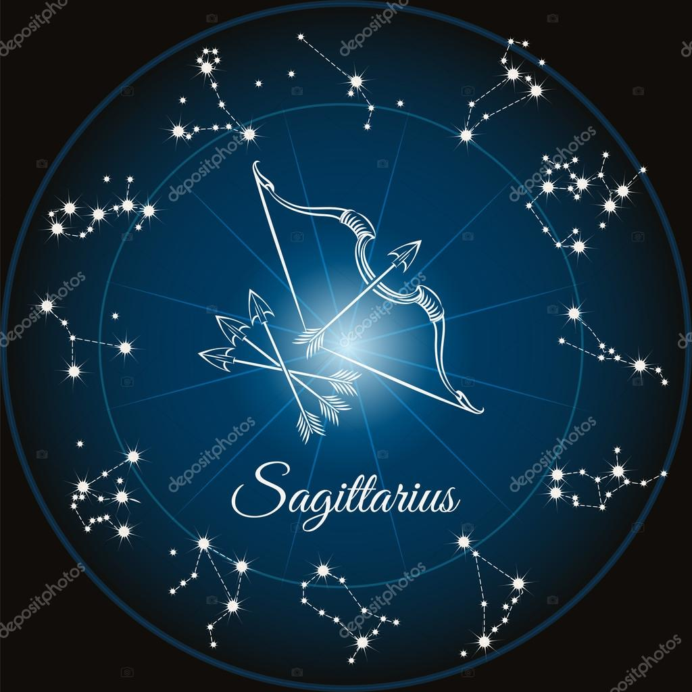

"La vida es un viaje, no un destino. Disfruta cada paso del camino".
22 de Noviembre | 21 de Diciembre | Oroscops
AMOR
Hoy, Sagitario, el amor se presenta como un viaje en sí mismo. Venus en Escorpio te invita a explorar las profundidades de tus emociones y a conectar con tu pareja de manera más intensa y espiritual. Si estás soltero, podrías sentir una atracción magnética hacia alguien que comparte tus sueños y visiones. Permítete ser vulnerable y expresar tus sentimientos sin miedo. Recuerda que el amor verdadero no teme a la verdad. Aprovecha este día para fortalecer lazos y abrir tu corazón a nuevas experiencias amorosas.
TRABAJO
En el trabajo, Sagitario, hoy es un día para dejar volar tu imaginación. La influencia de Neptuno potencia tu creatividad, permitiéndote encontrar soluciones innovadoras a problemas antiguos. No temas compartir tus ideas, incluso si parecen poco convencionales. Tu enfoque original puede ser justo lo que tu equipo necesita. Sin embargo, asegúrate de mantener un equilibrio entre la creatividad y la practicidad. Organiza tus tareas para evitar distracciones y asegúrate de cumplir con tus responsabilidades. Tu espontaneidad es tu mayor fortaleza hoy.
SALUD
Tu bienestar hoy se verá beneficiado por la energía fluida de Neptuno en Piscis. Es un buen momento para practicar la meditación o el yoga, actividades que te conecten con tu ser interior y te ayuden a encontrar la paz mental. Escucha a tu cuerpo y dale lo que necesita, ya sea descanso, ejercicio o una dieta equilibrada. Recuerda que tu salud es un reflejo de tu estado emocional, así que mantén pensamientos positivos y rodéate de personas que te inspiren y te llenen de energía positiva.